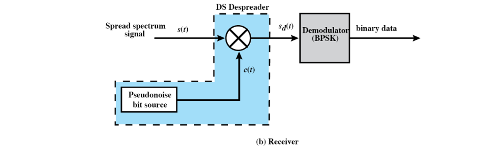
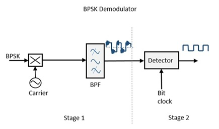
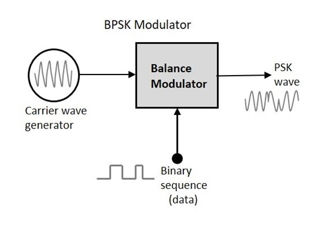

Dr. D.Y Patil Institiute Of Technology ,Pimpri(411018)
Component's Description
> > > > Click on a component to see it's details.
RECIEVER:
-

The block diagram of BPSK demodulator consists of a mixer with local oscillator circuit, a bandpass filter, a two-input detector circuit. The diagram is as follows.

y recovering the band-limited message signal, with the help of the mixer circuit and the band pass filter, the first stage of demodulation gets completed. The base band signal which is band limited is obtained and this signal is used to regenerate the binary message bit stream. In the next stage of demodulation, the bit clock rate is needed at the detector circuit to produce the original binary message signal. If the bit rate is a sub-multiple of the carrier frequency, then the bit clock regeneration is simplified. To make the circuit easily understandable, a decision-making circuit may also be inserted at the 2nd stage of detection.
PN sequences are usually generated using Linear Feedback Shift Registers (LFSR) based on Galois Field arithmetic. The length of the PN sequence depends on the number of shift register stages. If there are m shift registers used, the maximum possible PN sequence length.
BPSK Demodulation
Pseudo Noise bit source:
TRANSMITTER
BPSK Modulation:
The block diagram of Binary Phase Shift Keying consists of the balance modulator which has the carrier sine wave as one input and the binary sequence as the other input. Following is the diagrammatic representation.
The modulation of BPSK is done using a balance modulator, which multiplies the two signals applied at the input. For a zero binary input, the phase will be 0° and for a high input, the phase reversal is of 180°.
Direct-sequence spread-spectrum transmissions
Direct-sequence spread-spectrum transmissions multiply the data being transmitted by a pseudorandom spreading sequence that has a much higher bit rate than the original data rate. The resulting transmitted signal resembles bandlimited white noise, like an audio recording of "static". However, this noise-like signal is used to exactly reconstruct the original data at the receiving end, by multiplying it by the same spreading sequence (because 1 × 1 = 1, and −1 × −1 = 1). This process, known as despreading, is mathematically a correlation of the transmitted spreading sequence with the spreading sequence that the receiver already knows the transmitter is using. After the despreading, the signal-to-noise ratio is approximately increased by the spreading factor, which is the ratio of the spreading-sequence rate to the data rate.